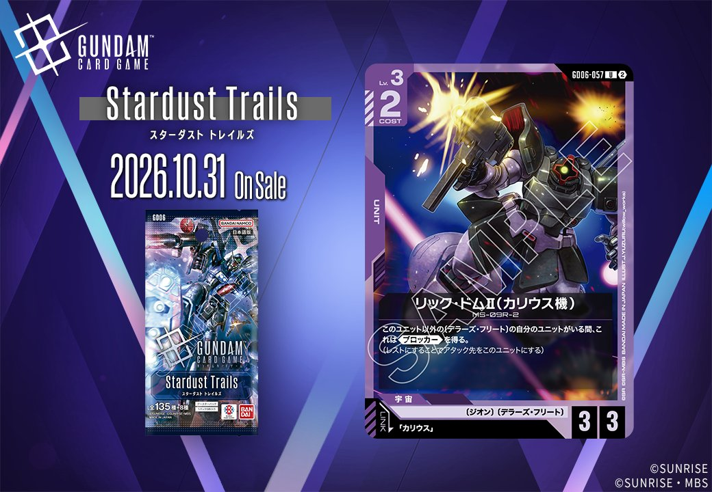

今回はStardust Trails(GD06)より、紫のCOMMAND「古参の合流」(GD06-117)と、「カリウス」とのリンクを持つ紫のUNIT「リック・ドムⅡ(カリウス機)」(GD06-057)の2枚を紹介します。いずれも2026年10月31日発売の収録カードです。
古参の合流 (GD06-117)
| 色 | 紫 | タイプ | COMMAND |
| Lv | 3 | コスト | 1 |
| パイロット | カリウス（補正 AP+1 / HP+1） 〔ジオン〕、〔デラーズ・フリート〕 | ||
効果: 【アクション】レストの〔デラーズ・フリート〕の味方のユニット1つを選ぶ。バトルしている相手のユニットのアタック先をそれにする。
古参の合流(GD06-117)は、COST1・Lv.3の紫コマンドで、【アクション】でレストの〔デラーズ・フリート〕味方ユニット1つを選び、バトル中の相手ユニットのアタック先をそれに変更する効果を持つ。実質的なアタック先操作で、《ブロッカー》を持たないユニットでも身代わりとして機能させられる点が特徴。 低コストで能動的に発動でき、〔デラーズ・フリート〕を軸としたデッキで守りの選択肢を増やせる。2026-10-31発売のStardust Trails収録カード。

リック・ドムⅡ(カリウス機) (GD06-057)
| 色 | 紫 | タイプ | UNIT |
| Lv | 3 | コスト | 2 |
| AP | 3 | HP | 3 |
| 特徴 | 〔ジオン〕、〔デラーズ・フリート〕 | ||
| リンク条件 | 「カリウス」 | ||
効果: このユニット以外の〔デラーズ・フリート〕の自分のユニットがいる間、これは《ブロッカー》を得る。(レストにすることでアタック先をこのユニットにする)
COST2でAP3/HP3という良好なスタッツを持つLv.3ユニットで、〔デラーズ・フリート〕の自軍ユニットが他にいる限り《ブロッカー》を得られるのが持ち味。同特徴を並べる構築で身代わりとして機能し、後続の展開を守る役割が期待できます。 リンク「カリウス」対応で、2026年10月31日発売のGD06収録カードです。


関連カード
-
 ガンダム・バルバトスアダプト(GD03-056)紫系デッキ内採用率35.9% (1888デッキ)
ガンダム・バルバトスアダプト(GD03-056)紫系デッキ内採用率35.9% (1888デッキ) -
 三日月・オーガス(ST05-010)紫系デッキ内採用率35.8% (1882デッキ)
三日月・オーガス(ST05-010)紫系デッキ内採用率35.8% (1882デッキ) -
 ガンダム・バルバトス（第1形態）(GD02-054)紫系デッキ内採用率34.7% (1824デッキ)
ガンダム・バルバトス（第1形態）(GD02-054)紫系デッキ内採用率34.7% (1824デッキ) -
 百錬(ST05-006)紫系デッキ内採用率28.2% (1481デッキ)
百錬(ST05-006)紫系デッキ内採用率28.2% (1481デッキ) -
 グレイズ改(ST05-004)紫系デッキ内採用率28% (1474デッキ)
グレイズ改(ST05-004)紫系デッキ内採用率28% (1474デッキ) -
 ギャン(ST12-007)NEW紫系 — 同色・共通特徴: ジオン（新カード）
ギャン(ST12-007)NEW紫系 — 同色・共通特徴: ジオン（新カード） -
 ロニ・ガーベイ(ST11-012)NEW紫系 — 同色・共通特徴: ジオン（新カード）
ロニ・ガーベイ(ST11-012)NEW紫系 — 同色・共通特徴: ジオン（新カード） -
 シャンブロ(ST11-006)NEW紫系 — 同色・共通特徴: ジオン（新カード）
シャンブロ(ST11-006)NEW紫系 — 同色・共通特徴: ジオン（新カード） -
 アナベル・ガトー(GD06-093)NEW紫系 — 同色・共通特徴: ジオン、デラーズ・フリート（新カード）
アナベル・ガトー(GD06-093)NEW紫系 — 同色・共通特徴: ジオン、デラーズ・フリート（新カード） -
 ガンダム試作2号機(GD06-049)NEW紫系 — 同色・共通特徴: ジオン、デラーズ・フリート（新カード）
ガンダム試作2号機(GD06-049)NEW紫系 — 同色・共通特徴: ジオン、デラーズ・フリート（新カード）